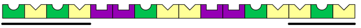
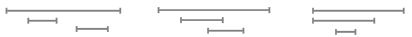
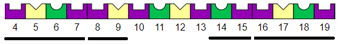
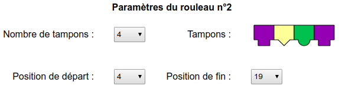

Solution
On pouvait repérer que l'objectif est formé d'une même séquence de 4 formes, répétée 4 fois. On pouvait donc le reproduire avec un rouleau de 4 tampons, appliqué sur toute la longueur.

On repère que les 4 premières cases et les 3 dernières cases de l'objectif contiennent une alternance des empreintes rondes (vert) et trianle (jaune).
On peut reproduire cette alternance en configurant le premier rouleau ainsi :

Il reste à utiliser le second rouleau pour corriger les cases 5 à 13.
On obtient ainsi le marquage qu'il faut sur ces cases.

Pour nous aider à trouver, il est utile de bien avoir en tête les différentes manières dont les rouleaux peuvent se recouvrir. En voici quelques exemples.
Une approche consiste à se concentrer sur le premier segment, en cherchant un motif permettant de produire le début et la fin de la bande.
Il y a plusieurs possibilités, mais lorsque l' on envisage celle-ci avec 2 tampons :

On remarque que ce qui reste peut être en grande partie produit par un rouleau à 4 tampons :
Le reste peut facilement être couvert par un troisième rouleau.
Une autre approche était d'essayer de repérer un motif qui apparaît à plusieurs endroits. On pouvait par exemple remarquer à deux endroits, deux empruntes carrées mauves côte à côte. Si on regarde de plus près, on voit que la ressemblance s'étend aux deux cases voisines, puis qu'une partie du même bloc de 4 tampons se répète :

On retombe sur le même motif que pour le 2e tampon de la première approche.
Voici la solution obtenue au final :
Ces paramètres se visualisent ainsi :
C'est de l'informatique !
L'application d'un rouleau qui imprime plusieurs fois une séquence de formes et couleurs est comparable à l'utilisation des boucles de répétition, une des briques fondamentales de la programmation.
Par ailleurs, un rouleau peut avoir différents paramètres, mais il a toujours la même fonctionnalité, à savoir répéter un motif constitué d'un certain nombre de tampons, sur une certaine plage de cases. Avec un même concept de rouleau, on peut ainsi dessiner de nombreux motifs selon les paramètres que l'on choisit.
En informatique, on utilise le mot fonction pour décrire le fait qu'un ensemble d'instructions effectuant une action ou un calcul dépend d'un ou plusieurs paramètres. Les fonctions sont une autre des briques fondamentales de la programmation.